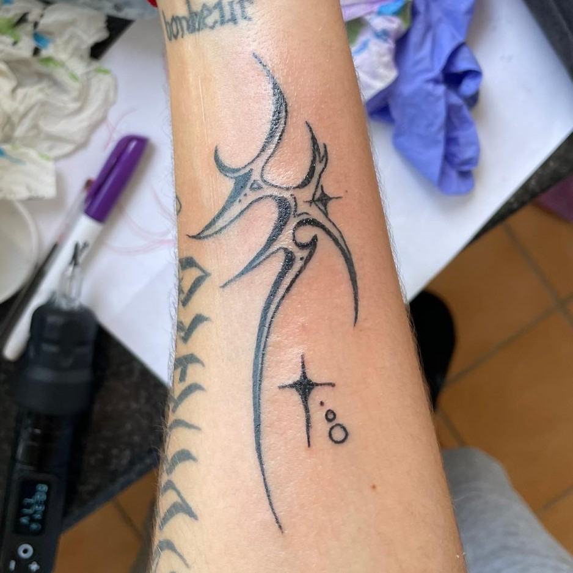
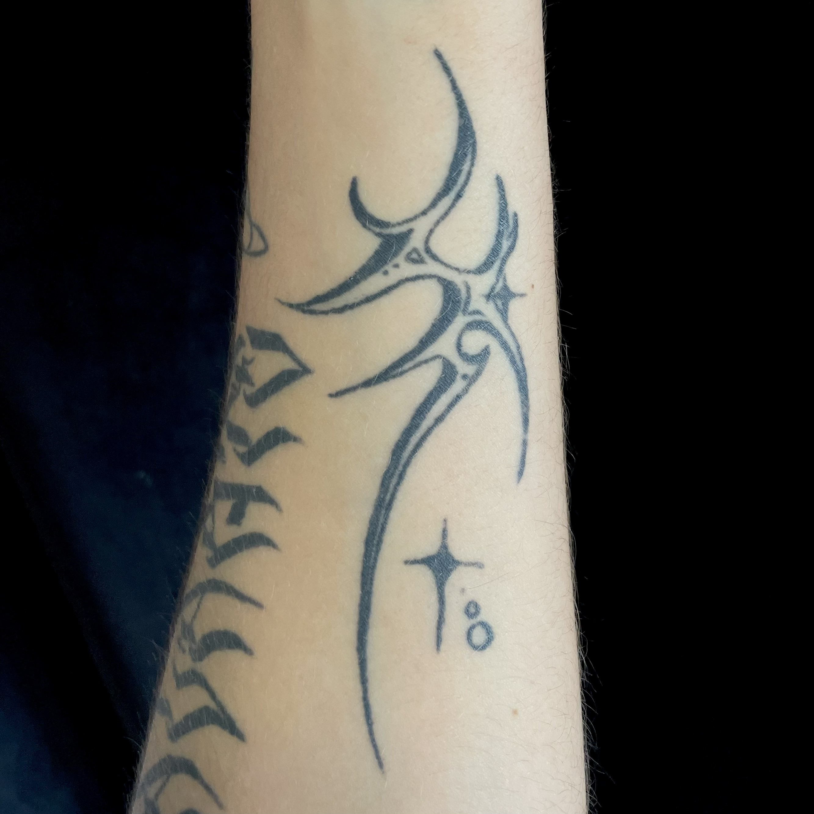
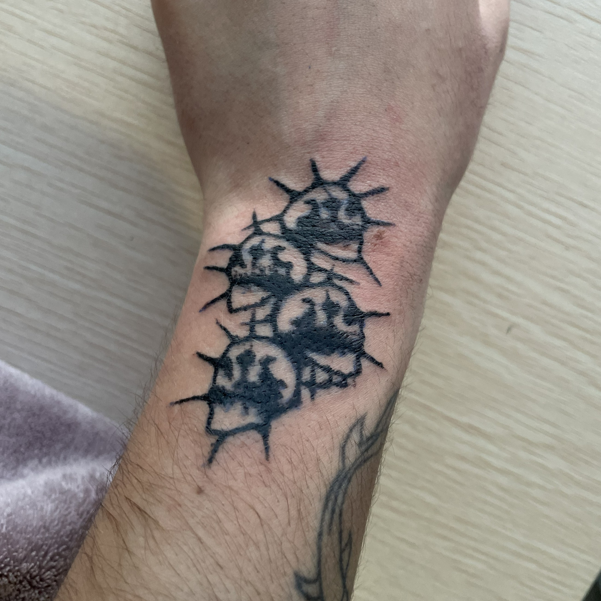
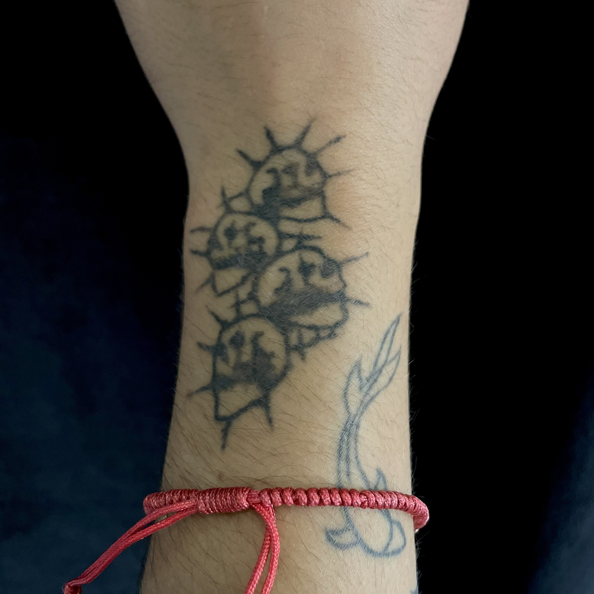

1
Limpia el tatuaje correctamente
Lava la zona 2–3 veces al día con agua tibia y un jabón neutro sin perfume. Sécalo con toques suaves usando papel o una toalla limpia, sin frotar.
2
Mantén la piel bien hidratada
Aplica una crema específica para tatuajes o recomendada por tu tatuador en capas finas. Evita excederte para que la piel pueda respirar
3
No lo toques ni lo rasques
Es normal que pique o moleste durante la cicatrización, pero rascarlo puede dañar el diseño y provocar infecciones.
4
Evita la exposición al sol
No expongas el tatuaje al sol directo mientras cicatriza. Una vez curado, usa siempre protector solar para mantener los colores vivos.
5
Nada de agua prolongada
Durante los primeros días evita piscinas, playa, baños largos o saunas, ya que el exceso de humedad puede afectar la cicatrización.
6
Deja que cicatrice de forma natural
No arranques las costras ni las pieles que se formen. Estas caerán solas y retirarlas antes puede provocar pérdida de tinta o marcas.
RECIÉN HECHO

CURADO

RECIÉN HECHO

CURADO
